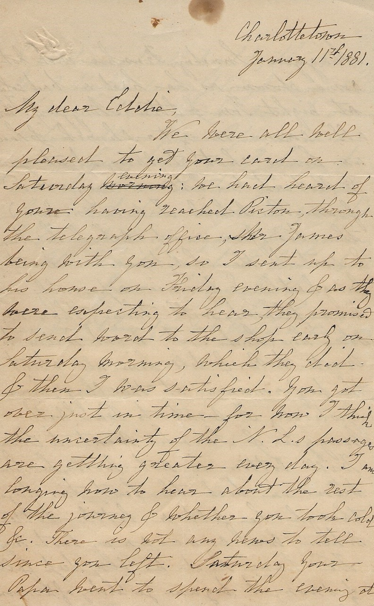

Charlottetown
January 11th, 1881
My dear Eddie,
We were all well pleased to get your card on Saturday evening: we had heard of your reaching Pictou through the telegraph office, James being with you, so I sent up to his house on Friday evening & as they were expecting to hear, they promised to send word to the shop early on Saturday morning, which they did & then I was satisfied. You got over just in time for now I think the uncertainty of the N.L’s passage are getting greater every day. I am longing now to hear about the rest of the journey & whether you took cold etc.
There is not any news to tell since you left. Saturday your Papa went to spend the evening at Maggie’s. Sunday, Frankie did not come down as he had a bad cold at night Tom & Etta, Maggie & Flora all came in after church & an hour’s chat; talking about you & Robert (a letter having arrived from R. which I now enclose) the New Year cards which he drew & sent to the children are most laughable & Winnie especially is most pleased with them than any she has had.
I want Willie to write to R. & tell him all about the performance at the clergy house. Yesterday I went to Tea with Maggie & Sarah went to Etta’s. Will Cotton is not well, he has been in bed the last two days though he felt a little better when we came away last night.
We have had a very deep fall of snow; it began yesterday afternoon & continued all night, this morning Mr. J. Peake’s snow plough came round & cleared a track round our sidewalk. Your Papa is in a great hurry to go so I have to conclude in haste. Your Mitts have not been recovered yet, but Willie will go again & enquire.
All unite in best love with your loving Mother S. Harris
Sarah wants to know if you took classical dictionary away